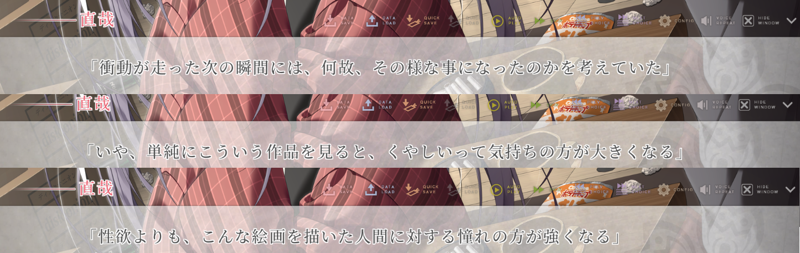
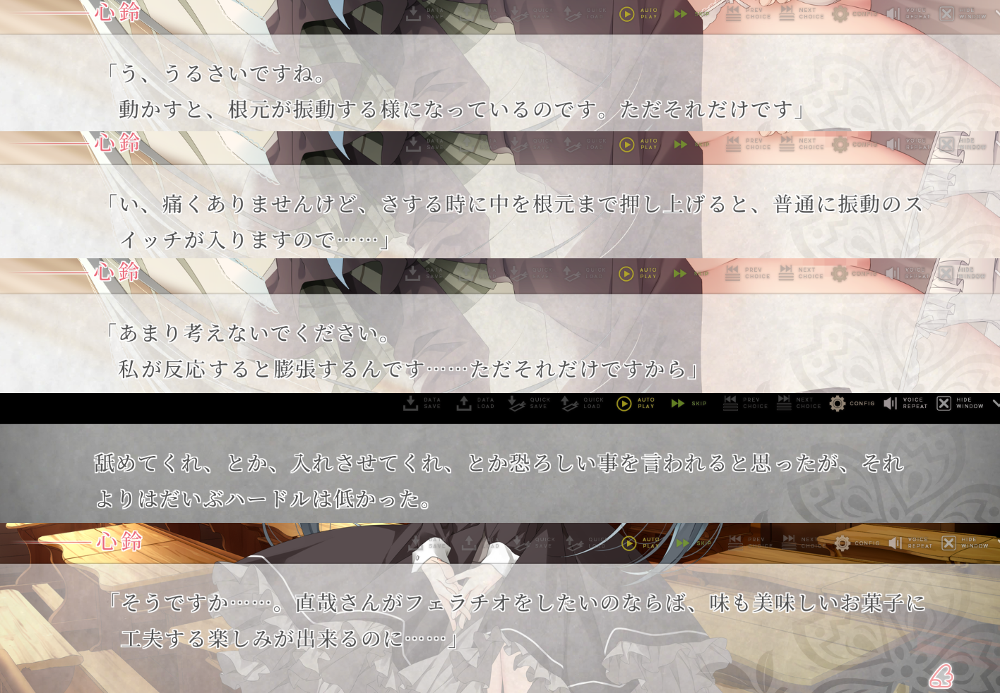

虽然我不懂艺术，但文字让我感受到了艺术的存在，这就是文字言语的力量，也是我深爱文字的原因。
由于实在等不起“樱之刻”完全汉化的那一天了，所以我最近几天总算是挺着机翻和原文给推完了。嘛，关于樱系列的评价，就等樱之响出以后，三部一起回顾一遍再说吧，虽然不知道那时有没有时间就是了。回到“樱之刻”这里，我想说说其中的sex部分，我呢，对所有作品都是一视同仁的，不论剧情、废萌、还是拔作，我甚至不愿给它们贴上这样的标签来以视区分，比如近几年的那个榨精病栋(steam翻译为病房轶事)，不过拔作的特色过于明显了，如果不是像榨精病栋那样被推荐我大概也不会去推。我想说的是，可能由于我近些年拔作推少了，导致樱之刻的sex部分给我一种耳目一新的感觉，所以就趁着这个大好时机，来谈谈我心中的sex艺术吧。
开始的必要前提是，无聊的sex和猎奇的sex都哒咩。何为无聊？即AV中的sex，我其实很久以前就说过，同样的动作，同样的戏码，反反复复，竟然还有人喜欢和买账，只能说天性的力量超乎了我的想象。但其实还有一种可能性，就是寻找，就像我自己，同样经常看AV，但基本都是快进和跳过，何时都抱着一种能找到新东西的感觉，但最后无非就是一次次的失望。新东西，是猎奇吗？当然不是了，sex是爱的象征，我十分不赞同对身体的破坏是一种爱的表现，相反，它让sex变成一种欲望与丑陋的具象化。“打是亲，骂是爱”，我其实挺赞同这句话的，单纯的打骂，或是中度的SM，是一种亲近，我们所拒绝的是对身体造成严重伤害的猎奇行为，现实可不像虚拟世界那么神奇，所以妄想的东西就让它永远活在幻想之中吧。
sex本就可以很有趣，而不是无聊的欲望释放，樱之刻似乎让我更坚定了自己的信念，“sex之美并非来自画面，而来自叙述它的文字”。蓝的sex都很正常，没啥好说的，真琴的sex也都挺正常的，就是每次sex的上下文时机怪怪的，樱子没有sex，但没有自慰的cg属实遗憾，优美和里奈的百合sex，聊胜于无。这么看来还剩几个sex呢？下面这张图
看起来有sex，但实际没有，只是一个小插曲，原因自己去看，在这段hs之前有几句值得品味

虽然我们不如男主那么理性，但有些类似的事情我们确实会做。每次看到AV的时候，总会思考它的亮点在哪里，新奇的地方在哪里，如果它让我勃起了，那么到底是哪一部分，喜欢的到底是什么，等等，最后探索出之前的所写的xp。盲目跟随他人的性癖是件无聊的事情，探索虽然有趣，但探索到尽头以后就索然无味了，比起性欲，最后激发出失落和羡慕，然后猛然地意识到了，看AV和看别人sex有什么差别。
我知道大多人所做的是所谓的代入感，因此大多数AV都会尽可能屏蔽男主，当然也有可能是保护男主的隐私，但都无所谓。反正我自己是做不到的，在我的个人视角里，看AV的屏幕和看现实没有太大差别，都是一个二维画面，那么在某种意义上，你相当于在现实中看别人的床戏，别人咋想我不关心，反正我不是很能接受。因此我的爱好大多集中在制服自慰和SM(女S男M)上，对于后一种并非我是一个抖M，而是基于“男主的痛苦就是我的快乐”的理念，我至始至终在AV观看上，都是一种观察者的视角，对男主都是充满羡慕、嫉妒和恨意的，因此看到他享受显然是我不能接受的，而受苦就是他最好的归宿。在这类理解层次上，为什么会喜欢NTR作品，大多数人，包括我自己，有两种看待的角度，一种要求自己不爱人，那么被绿永远是别人，换言之是一种典型的“黄毛思想”，另一种就是不要带入用一种旁观者的视角，苦主是男主，是别人，“同病相怜，惜惜相惜”，真不赖。
最后我们再来看最为主要的心铃，前面都挺正常的，核心是女院美术教室的sex，如果只是看下面这张图的话
还以为是什么女装系列的续作或是扶她什么的，但透过文字我们知道了，原来是心铃以为男主对圭的心态是男男的那种BL，然后加上男娘杂志和放哉的谣言，于是她萌生了满足男主这方面需求的想法，并以男主的性器为模本制作了可穿戴模型，虽然它能否在现实中做出来要打个问号，但它提供了一个很好的想法，游戏中的制作过程我个人觉得不太现实，但有些地方的想法很好。

其中实际还说明了几个同源进化关系，即阴蒂与阴茎、阴道+子宫与睾丸。现实中的一种类似产品是双向头，长的部分用来入侵男性，短的部分用来抚摸阴蒂，能像游戏中那样大小变化的还是没有见过。而后面的两段话表达了我的遗憾，比如男主给心铃口交，心铃插男主屁眼都是很不错的场景，可惜都没有。
剧情一直都是sex中的一个重要因素，但是大多数的AV作品，只把剧情放到上下文中，而在实际sex中无非就是一套惯用的语气词、惯用的形容词和惯用的套路，或许对一个单纯的性行为要求太多了，但我学习超越，并做到超越，不单纯是sex这个行为，实际上任何的行为，只要赋予足够的想象和联系，完全可以在文字上达到极高的境界，因为文字本身就是一种蕴意最广的载体，不论是图像还是声音都做不到这一点，反过来它们还需要文字来进行阐释，我爱好文字是不无道理的。我觉得现实非常的矛盾，在大多数的情况下，喜欢现实sex的不太喜欢文字，喜欢文字的不太喜欢现实sex，AV剧本是谁写的我不懂，其中大多数的文字都来自对话，而sex中的对话，无非就是调情、语气词和莫名其妙的感叹之类的，完全让人感受不到魅力。至于画面的视角刺激，我必需得说明一点，当你不知道它是性器的时候，没有这种观念的时候，它只是单纯的有机物堆砌。你明白我的意思吗？是文字与思想赋予了性器意义。简单来讲就，在认知的过程中，我们都先认识女性，才认识女性的性器。如果反过来，假设我们不知道女性的存在，不知道生殖本身，只是单纯地看到性器，会有感觉吗？我不懂，也找不到相关的研究，唯一的办法就是猜，猜它是否是人的天性，实际上，对小孩的观察也能窥见一二。
有人可能会觉得，我在说一些假大空的内容，但所谓的“指导思想”就是这样一种东西，而实际的内容则是在实践中摸索与寻找，我一直都在试着创作这种小说，也在拔作中寻找灵感和学习。或许让我满意的HS永远也不会到来，但探索的过程也是很享受的。